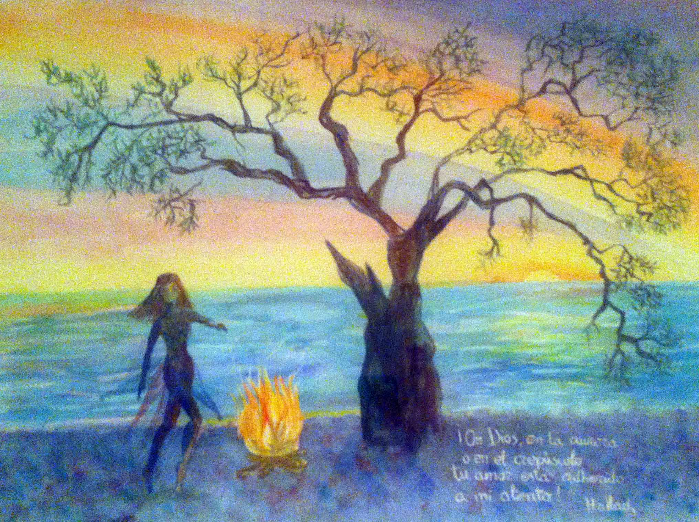

This watercolor work depicts a women dancing in the Twilight surrounded by the element
fire, may it be with the fire or with the sun.
Oh God!, In the Dawn or in the Twilight your love is adhered to my breath.

Technique: WaterColor
size: 50x40 cm
Creation Place: Workshop in Madrid
Current Location: Private Collection in Madrid
Description
Titled "The Elemental Dance", this masterful work by Paz Arés Osset is an explosion of color and a harmonious
amalgamation of natural and spiritual elements. Every detail of this painting reveals a profound vision and an
unmatched artistic approach.
At the center of this vibrant composition, a female figure dances with ethereal elegance, her movements
seeming to
bring the landscape itself to life. Her attire, akin to that of a fairy, feels almost tangible, as if one
could hear
the bells tinkling as she moves.
The fire, which plays a vital role in the work, symbolizes transformation and renewal, just like the dance
itself.
The wood, which fuels the bonfire, reminds us of our connection with nature, while the intense heat of the
fire
reminds us of our humanity and passion.
Next to the bonfire, a majestic tree rises towards the sky, its branches extending to encompass the top of
the
painting. This tree, a blend of elm and olive, symbolizes both resilience and peace, and its budding leaves
signal the
arrival of spring and the awakening of life.
The seashore, visible beside the fire and the tree, introduces the element of water, whose constant and
eternal flow
is a tribute to the constant transmutation of life. And in the distance, the sunset over the sea creates a
spectacular
sky, filled with shades of yellows, oranges, and greens, reflecting on the tranquil sea waters and creating a
spectacle of light that occupies the upper half of the canvas.
Included in the painting is a mystical poem by Hallaj, "Oh God, in the dawn or in twilight your love is
attached to
my breath", an ode to divine omnipresence and the idea that spirituality can be found in every breath we take.
"The Elemental Dance" is not just a piece of art; it is a celebration of life, a prayer, and a dance all in
one. It
is a testament to Paz Arés Osset's ability to capture the ephemeral and immortalize it on a canvas, inviting
us all to
find beauty in the constant dance of elements and the inherent harmony of existence. This piece is,
ultimately, an
invitation to partake in this divine dance, to connect with the earth we tread, the air we breathe, the fire
that
warms us, and the water that gives us life.
Titulada "La Danza Elemental", esta obra magistral de Paz Arés Osset es una explosión de color y una
armoniosa
amalgama de elementos naturales y espirituales. Cada detalle de este cuadro revela una visión profunda y un
enfoque
artístico inigualable.
En el centro de esta vibrante composición, una figura femenina danza con una elegancia etérea, sus
movimientos
parecen traer el paisaje mismo a la vida. Su atuendo, similar al de un hada, parece casi tangible, como si uno
pudiera
escuchar los cascabeles tintineando a medida que se mueve.
El fuego, que juega un papel vital en la obra, simboliza la transformación y la renovación, al igual que la
danza en
sí. La madera, que alimenta la hoguera, nos recuerda nuestra conexión con la naturaleza, mientras que el
intenso calor
del fuego nos recuerda nuestra humanidad y nuestra pasión.
Junto a la hoguera, un árbol majestuoso se eleva hacia el cielo, sus ramas extendiéndose para abarcar la
parte
superior del cuadro. Este árbol, una mezcla entre olmo y olivo, simboliza tanto la resistencia como la paz, y
sus
hojas incipientes señalan la llegada de la primavera y el despertar de la vida.
La orilla del mar, visible junto al fuego y el árbol, introduce el elemento del agua, cuyo flujo constante y
eterno
es un homenaje a la constante transmutación de la vida. Y en la distancia, la puesta de sol sobre el mar crea
un cielo
espectacular, lleno de matices de amarillos, naranjas y verdes, reflejándose en las tranquilas aguas del mar y
generando un espectáculo de luz que ocupa la mitad superior del lienzo.
Incluida en el cuadro está una poesía mística de Hallaj, "Oh Dios, en la aurora o en crepúsculo tu amor está
adherido
a mi aliento", una oda a la omnipresencia divina y a la idea de que la espiritualidad puede encontrarse en
cada
aliento que tomamos.
"La Danza Elemental" no es sólo una obra de arte; es una celebración de la vida, una oración y una danza todo
en uno.
Es un testimonio de la capacidad de Paz Arés Osset para capturar lo efímero y eternizarlo en un lienzo,
invitándonos a
todos a encontrar belleza en la danza constante de los elementos y la armonía inherente de la existencia. Esta
pieza
es, en última instancia, una invitación a participar en esta danza divina, a conectarse con la tierra que
pisamos, el
aire que respiramos, el fuego que nos calienta y el agua que nos da vida.
Intitolato "La Danza Elementale", questo capolavoro di Paz Arés Osset è un'esplosione di colore e
un'armoniosa
amalgama di elementi naturali e spirituali. Ogni dettaglio di questo dipinto rivela una visione profonda e un
approccio artistico ineguagliabile.
Al centro di questa vibrante composizione, una figura femminile danza con eleganza eterea, i suoi movimenti
sembrano
portare in vita il paesaggio stesso. Il suo abbigliamento, simile a quello di una fata, sembra quasi
tangibile, come
se si potesse sentire il tintinnio dei campanelli mentre si muove.
Il fuoco, che svolge un ruolo vitale nell'opera, simbolizza la trasformazione e il rinnovamento, proprio come
la
danza stessa. Il legno, che alimenta il falò, ci ricorda il nostro legame con la natura, mentre l'intenso
calore del
fuoco ci ricorda la nostra umanità e la nostra passione.
Accanto al falò, un albero maestoso si eleva verso il cielo, i suoi rami si estendono per abbracciare la
parte
superiore del dipinto. Questo albero, un mix di olmo e olivo, simboleggia sia la resistenza che la pace, e le
sue
foglie in germogliamento segnalano l'arrivo della primavera e il risveglio della vita.
La riva del mare, visibile accanto al fuoco e all'albero, introduce l'elemento dell'acqua, il cui flusso
costante ed
eterno è un omaggio alla costante transmutazione della vita. E in lontananza, il tramonto sul mare crea un
cielo
spettacolare, pieno di sfumature di gialli, arancioni e verdi, che si riflettono sulle tranquille acque del
mare e
creano uno spettacolo di luce che occupa la metà superiore della tela.
Nel quadro è inclusa una poesia mistica di Hallaj, "Oh Dio, all'alba o al crepuscolo il tuo amore è attaccato
al mio
respiro", un'ode all'onnipresenza divina e all'idea che la spiritualità può essere trovata in ogni respiro che
prendiamo.
"La Danza Elementale" non è solo un'opera d'arte; è una celebrazione della vita, una preghiera e una danza
tutto in
uno. È una testimonianza della capacità di Paz Arés Osset di catturare l'effimero e di immortalarlo su una
tela,
invitandoci tutti a trovare la bellezza nella costante danza degli elementi e nell'armonia intrinseca
dell'esistenza.
Questo pezzo è, in ultima analisi, un invito a partecipare a questa danza divina, a collegarsi con la terra
che
calpestiamo, l'aria che respiriamo, il fuoco che ci scalda e l'acqua che ci dà vita.